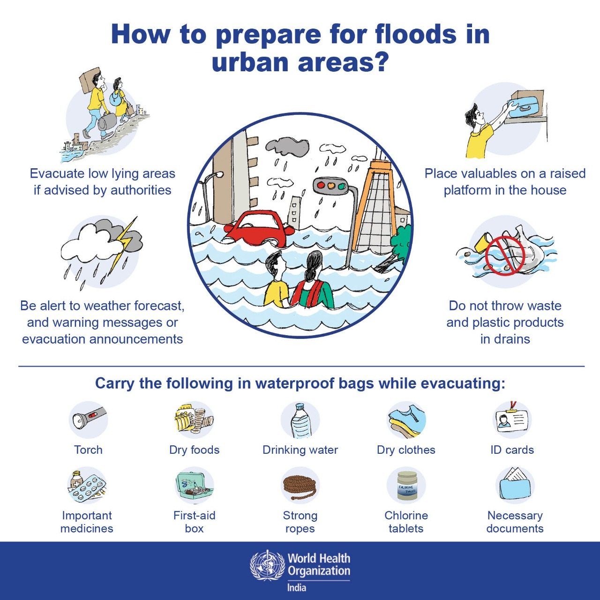
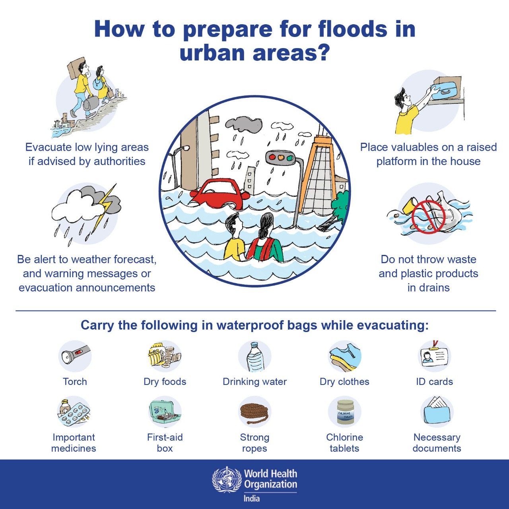

Understanding Floods: Introduction, Symptoms, and Preventive Measures

Introduction to Floods
What are Floods? Floods occur when water overwhelms an area that is usually dry. This can result from various causes, including heavy rainfall, storm surges, snowmelt, or the overflow of rivers and lakes. Flooding can lead to significant property damage, loss of life, and environmental disruption.
Symptoms of an Approaching Flood
While floods can develop rapidly, there are several signs that may indicate an impending flood:
- Heavy Rainfall: Persistent or intense rainfall over a short period can lead to flooding.
- Rising Water Levels: Observing rising water levels in rivers, streams, or nearby bodies of water.
- Unusual Water Flow: Increased flow in normally calm water sources or rapid changes in water flow.
- Flood Warnings: Alerts or warnings from local weather services or authorities.
Preventive Measures During a Flood
Taking the following actions can help reduce the impact of a flood:
- Move to Higher Ground
- Secure Important Documents
- Turn Off Utilities
- Avoid Floodwater
- Follow Official Instructions
 
